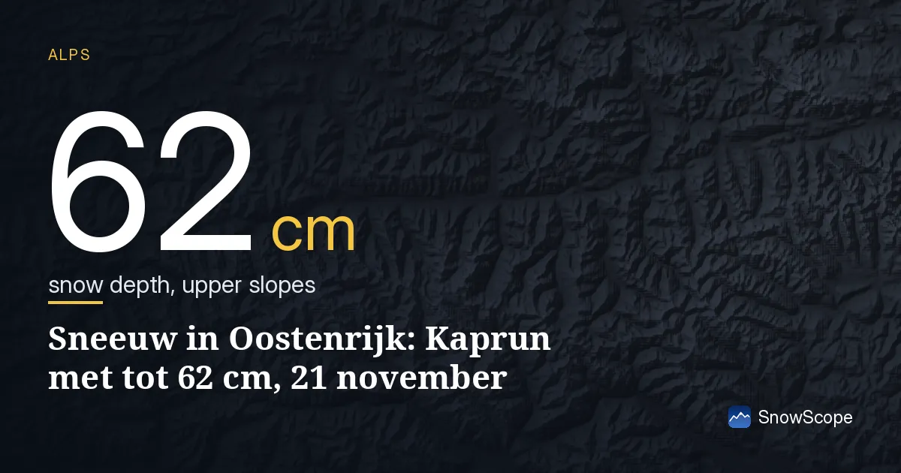

Sneeuw in Oostenrijk: Kaprun met tot 62 cm, 21 november
Kaprun heeft deze zaterdag 62 cm boven op de piste, het meest in Oostenrijk.
Bekijk de sneeuwverwachting voor Kaprun in de SnowScope-appSneeuwhoogte, alerts en de 3D-kaart, gratis.
Sneeuw boven op de piste
Over alle 12 skigebieden op deze lijst ligt de middelste waarde op 40 cm boven op de piste.
De rest van de top vijf: Hintertuxer Gletscher (48 cm), Mayrhofen Hippach (43 cm), Sölden (42 cm) en Hochzillertal-Hochfügen (40 cm).
| Skigebied | Sneeuwhoogte | Verse sneeuw, 72 u | Komende dagen | Top |
|---|---|---|---|---|
| Kaprun | 62 cm | 18 cm | 11 cm | 3.024 m |
| Hintertuxer Gletscher | 48 cm | 19 cm | 17 cm | 3.245 m |
| Mayrhofen Hippach | 43 cm | 16 cm | 15 cm | 2.468 m |
| Sölden | 42 cm | 22 cm | 18 cm | 3.247 m |
| Hochzillertal-Hochfügen | 40 cm | 17 cm | 15 cm | 2.374 m |
| Zillertal Arena | 40 cm | 17 cm | 14 cm | 2.501 m |

Per skigebied
Kaprun: 62 cm boven op de piste (hoogste lift 3.024 m), 18 cm verse sneeuw in 72 uur, tot en met 24 november nog 11 cm.
Hintertuxer Gletscher: 48 cm boven op de piste (hoogste lift 3.245 m), 19 cm verse sneeuw in 72 uur, tot en met 24 november nog 17 cm.
Mayrhofen Hippach heeft boven 43 cm; de liften gaan tot 2.468 m. Verse sneeuw: 16 cm in drie dagen, verwachting 15 cm tot en met 24 november.
Sölden: 42 cm boven op de piste (hoogste lift 3.247 m), 22 cm verse sneeuw in 72 uur, tot en met 24 november nog 18 cm.
Wat er in drie dagen viel
De laatste drie dagen brachten Ischgl 30 cm, Serfaus Fiss Ladis 26 cm en Sölden 22 cm.
Sneeuw onderweg
Tot en met 24 november komt erbij: Ischgl 26 cm, Serfaus Fiss Ladis 23 cm en Sölden 18 cm.
Naast de piste
Met tot 30 cm verse sneeuw worden de eerste bochten naast de piste zacht. Lees eerst het lokale lawinebulletin en blijf op hellingen die je kent: verse sneeuw op een dunne basis verbergt stenen.
Verse sneeuw op een koude basis betekent de beste pisteomstandigheden van de week, ook de steile hellingen skiën weer goed.
Als je twee dagen hebt
Voor een korte trip is Ischgl de keuze: nu 30 cm boven op de piste en tot en met 24 november nog 26 cm erbij.
Voor een weekend liggen de Duitse middelgebergten binnen een dagtrip met de auto; voor Oostenrijk plan je beter minstens drie nachten.
Tips voor skiërs
- Winterbanden of sneeuwkettingen voor de laatste kilometers naar de hoge skigebieden.
- Begin van het seizoen: wax je ski's, de sneeuw is vaak stroef.
- Off-piste alleen na het lezen van het lawinebulletin.
About these numbers
Resort snow depths are the deepest snow on the resort's upper slopes on the date shown; they are estimates for an area, not a measurement at one point. Forecasts can change. Always read the official avalanche bulletin before going off-piste.
Cite this report
For research, teaching or the press: the numbers and charts are free to reuse under CC BY 4.0 with this citation.
SnowScope (2026), Sneeuw in Oostenrijk: Kaprun met tot 62 cm, 21 november, https://snowscope.app/blog/nl/2026/11/sneeuw-oostenrijk-skigebieden-21-november-2026.html, accessed 2026-11-21
SnowScope (Atlas Labs). (2026, November 21). Sneeuw in Oostenrijk: Kaprun met tot 62 cm, 21 november. SnowScope snow reports. https://snowscope.app/blog/nl/2026/11/sneeuw-oostenrijk-skigebieden-21-november-2026.html
BibTeX
@misc{snowscope2026sneeuwoostenrijkskigebie,
author = {{SnowScope (Atlas Labs)}},
title = {Sneeuw in Oostenrijk: Kaprun met tot 62 cm, 21 november},
year = {2026},
month = nov,
howpublished = {\url{https://snowscope.app/blog/nl/2026/11/sneeuw-oostenrijk-skigebieden-21-november-2026.html}},
note = {Published 2026-11-21 11:39 UTC; accessed 2026-11-21}
}· CC BY 4.0 · Methods, data and tools →
Kaprun: snow and temperature by height, this winter vs last (tools) →
Follow Kaprun
Gratis: een bericht als er verse sneeuw komt, en elke ochtend de verwachting.